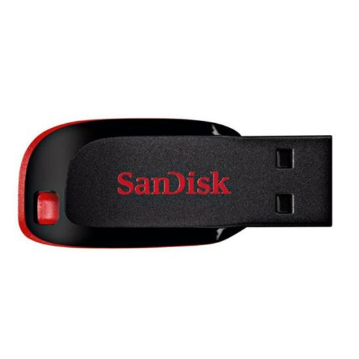
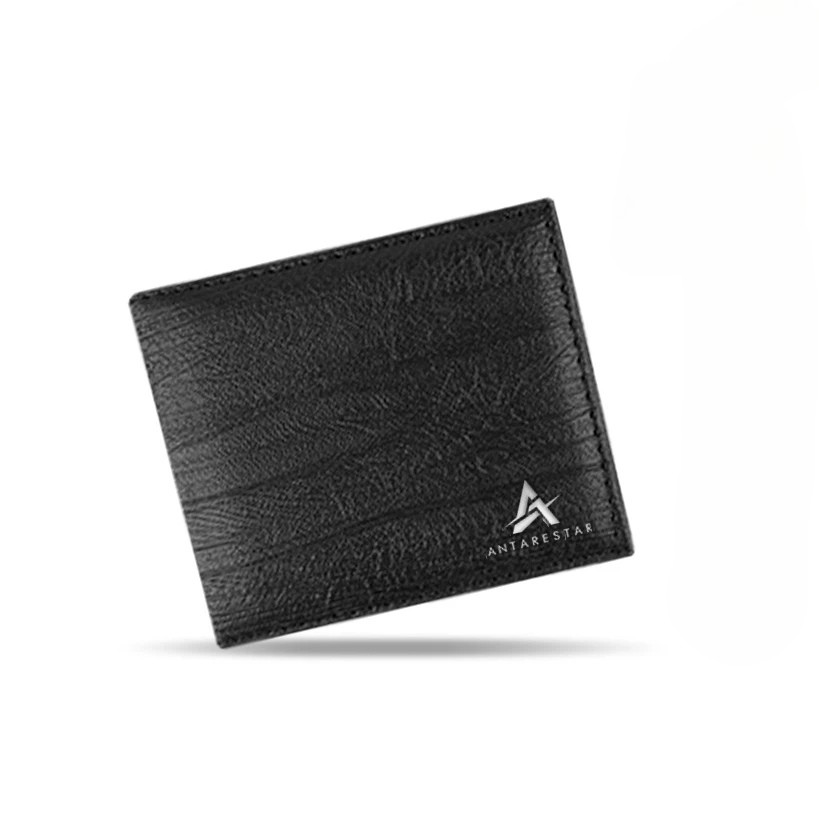

Daftar Barang Hilang
Berikut adalah barang-barang yang dilaporkan hilang di lingkungan Fasilkom.
Data Barang Hilang
| No | Nama Barang | Deskripsi | Lokasi Hilang | Tanggal | Pelapor | Kontak | Foto | Status |
|---|---|---|---|---|---|---|---|---|
| 1 | Flashdisk Sandisk 32GB | Elektronik | Lab Jaringan | Sean | 08123456789 |  |
Dicari | |
| 2 | Dompet Kulit Hitam | Dompet | Kantin | Budi | 08234567890 |  |
Dicari | |
| 3 | KTM An. Munaroh | Kartu | Parkiran | Munaroh | 0834564882 | Ditemukan | ||
| 4 | KTM An. Keonho Abidin | Kartu | Parkiran | Keonho | 08343839201 | Dicari | ||
| 5 | HP Samsung A54 | Elektronik | Parkiran | Martin | 0834283901 | Ditemukan | ||
| Total: 5 barang — 2 ditemukan, 3 masih dicari | ||||||||
Keterangan Status
- Dicari - Barang masih hilang dan sedang dicari
- Ditemukan - Barang sudah ditemukan dan dikembalikan ke pemilik